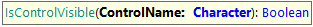
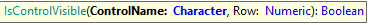
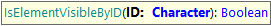
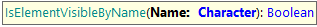
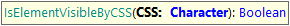
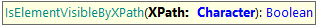
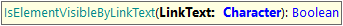

This command is useful to check if an element is visible on a webpage.
Returns true if the element is visible and false if it is not.

Checks if a control is visible.
Parameters:
ControlName: the name of the control as defined in the KB.
Example of use:
&driver.IsControlVisible("Price")

Checks if a control is visible.
Parameters:
ControlName: the name of the control as defined in the KB.
Row: row number to locate the control inside the grid
Example of use:
&driver.IsControlVisible("Price", 1)
&driver.IsControlVisible("webComponent1.Price", 2)
Also, can be executed using different locators (id, name, CSS, XPath, or LinkText) as follows:

Checks if an element it’s visible using its ID.
Parameters:
ID: the HTML element ID .
Example of use:
&driver.IsElementVisibleByID("InvoiceTotal")

Checks if an element it’s visible using its 'name' attribute.
Parameters:
Name: the value of the NAME attribute of the element.
Example of use:
&driver.IsElementVisibleByName("total")

Checks if an element it’s visible using its CSS selector.
Parameters:
CSS: the CSS selector to the element.
Example of use:
&driver.IsElementVisibleByCSS("#vVAR1")

Checks if an element it’s visible using an XPath selector.
Parameters:
XPath: the XPath selector to the element.
Example of use:
&driver.IsElementVisibleByXPath("//textarea[@id='vVAR1']")

Checks if an element it’s visible using a LinkText selector.
Parameters:
LinkText: the link’s text of the element.
Example of use:
&driver.IsElementVisibleByLinkText("Edit")
| Backlinks |
| GXtest UI Test for Web - Supported Commands |
| Toc:GXtest v4 |